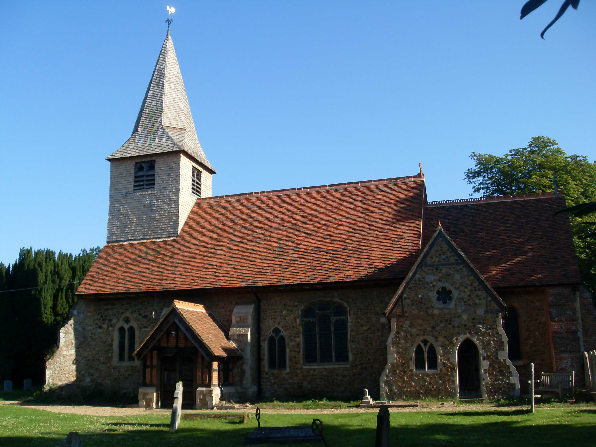

A ring of six bells, rung from a raised platform at the back of the church — in full view of the congregation.
Essex Association of Change Ringers · Maldon & District Guild
St Peter's is a ground-floor ring of six. Our practice night is Friday evenings, and we welcome visitors all year round — whether you ring already, would like to learn from scratch, or simply want to come and hear the bells.
Hear the bells of St Peter's. Open on YouTube →
Friday evenings,
7.45pm – 9.00pm
Whether you'd like to learn from scratch or you're a visiting ringer passing through Essex, you're very welcome. Please contact our Tower Captain in advance to confirm we'll be ringing.
The earliest peal board hanging in our ringing chamber is dated 1895. The current six bells were cast by John Warner & Sons of Cripplegate, London in 1878; they were overhauled in 1991, and the ringing chamber has since been refurbished. Through it all, the band — and the Friday-evening practice — has carried on, decade after decade.
On the 16th of April 1912, in two hours and forty-two minutes, a Maldon & District Guild band rang the first peal of Treble Bob Minor on these bells. The board still hangs in the tower today.